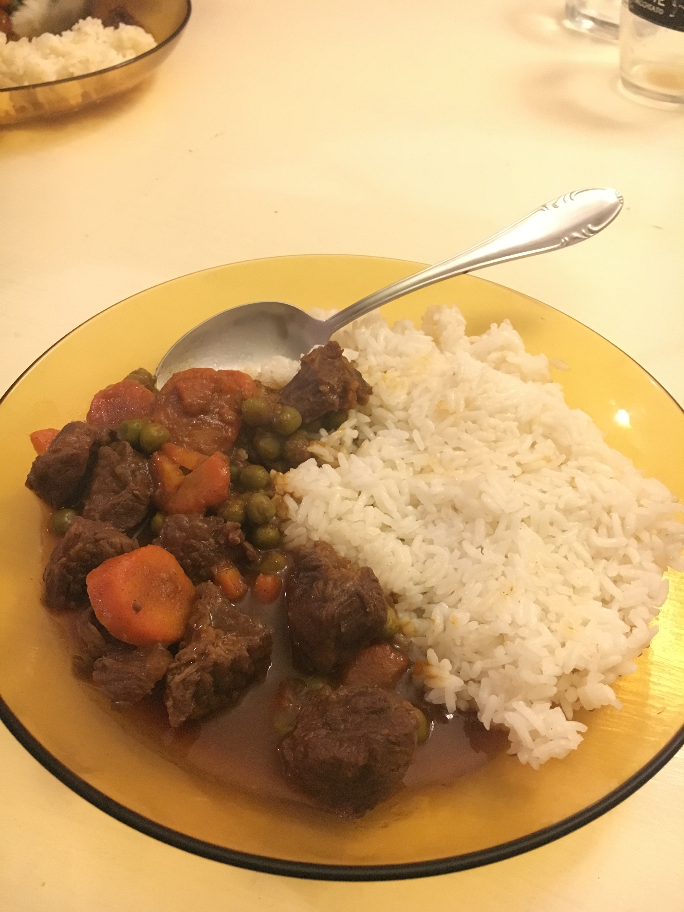

If you like the traditional hungarian beef stew, then you must
try this version as well! Don't be afraid of the cinnamon, it brings
a really exotic flavor to it. Use any side dish for it, rice is
probably the best choice.

Ingredient name
Quantity
Frozen Beans
500 gramms
Beef
1 kg
Purple onion
1 big piece
Carrots
2 pieces
Tomato sauce
1 can
Maggi cubes
2 pieces
One tablespoon of each
White pepper, Cinnamon, Black pepper
Crushed cardamom
3-4 pieces
Bay leaf
2 pieces
Elkészítés:
Cut the onions into small pieces and put it on the oil in the big pot
till they get colorish. Then put the chicken on the onions until they
become white in color, then add the spices (one table spoon of each),
the cardimom and the leaf and mix them for 5 minutes. Put the beans
after they are not frozen and then the carrots and the maggi spices
in the same pot and mix them. Then add 3 table spoons of tomato
sauce. And also mix them. Fill it with water till half of the pot
till. And wait it cooks for 45 minutes. It is recommended to use a
pressure cooker, otherwise the meat takes hours to get cooked well :)
. Jó étvágyat!
Cím kiírása